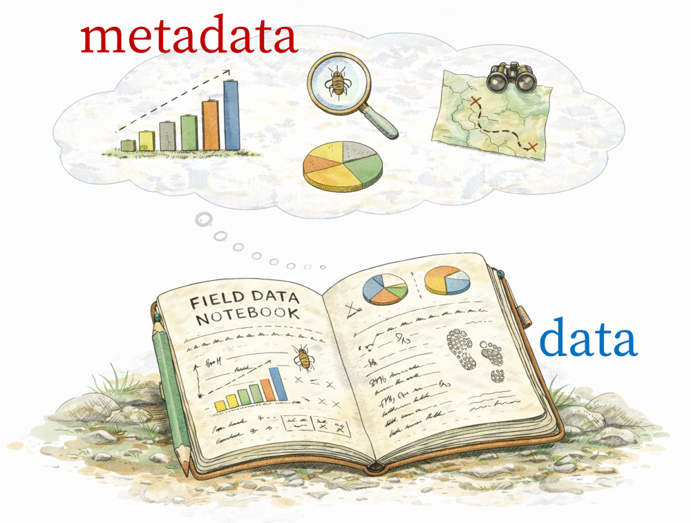

13 Metadata
13.1 What metadata are (and are not)
Metadata are data about data.
This definition is technically correct, but not very useful on its own. A more practical way to think about metadata is this:
Metadata describe the context in which data were generated.

Metadata record the information needed to interpret measurements correctly. They tell us:
- who collected the data
- when and where they were collected
- how measurements were made
- what files belong together
- what assumptions, constraints, or limitations existed upstream
Metadata are not bureaucracy. They are scientific memory. Without metadata, data quickly lose meaning—especially once they leave the hands of the person who collected them.
13.2 Why metadata are essential
Raw data without metadata are often difficult—or impossible—to interpret, even by the original researcher. In practice, many irreproducible analyses fail before modeling begins, because key contextual information was never recorded. A column of numbers without units, provenance, or spatial and temporal context is just a sequence of values. It is not reusable scientific data.
At a broad level, good metadata allow others (and future you) to:
- understand what the data actually represent, and what their limitations are
- judge whether the data are appropriate for a new purpose or analysis
- reconstruct and evaluate analytical decisions made downstream
Metadata do not guarantee good science, but their absence almost guarantees future confusion.
13.3 Metadata within a reproducible analytical workflow
Reproducibility is not just about being able to rerun code indefinitely. It also requires being able to answer core questions about the data themselves, such as:
- What exactly was measured?
- Under what conditions were the measurements taken?
- What instruments or protocols were used?
- What were the data’s limitations or sources of error?
Metadata provide the necessary bridge between raw data and scientific inference. They explain how measurements came to exist and clarify which kinds of estimands the data can —and cannot— support.
Within the broader analytical workflow, raw data and metadata together form a complete dataset. Complete datasets can be verified, versioned, shared, and reused. All subsequent processing, modeling, and inference depend on this foundation.
To emphasize, metadata are not an afterthought; they are part of the data.
13.4 What good metadata enable (FAIR, in plain language)
At their core, the FAIR principles (Wilkinson et al. (2016)) recognize that data are only useful if their context travels with them. Metadata are what make this possible. Much of the modern emphasis on metadata comes from the FAIR principles, which aim to ensure that scientific data are:
- Findable: Metadata help other people find that the data exist.
- Accessible: Metadata explain how to get the data and what the files mean.
- Interoperable: Metadata make it clear how the data are formatted and measured, so they work with other data.
- Reusable: Metadata explain how the data were collected and what their limits are, so others can use them correctly.
Crucially, FAIR is not about ensuring perfection; it is about increasing the probability of future usability.
You are not expected to memorize the FAIR acronym. What matters most is understanding what FAIR is trying to do (specifically, what it is trying to protect)!
13.5 A low-friction approach to metadata
You have probably encountered the long list of formal metadata standards used across scientific disciplines. For this course, you do not need to master any of them, and, in fact, you barely need to know them at all.
Our approach to metadata is intentionally low friction. That means it fits naturally into you (and others) already work: without extra tools or unnecessary extra steps, and without specialized expertise. The goal is not blind compliance to reporting standards; first and foremost, it is about scientific clarity. We therefore adopt a simple guiding principle:
Let repositories handle standardization. Your job is to record clear, honest, human-readable metadata.
Repositories such as Dataverse, Zenodo, Dryad, GBIF, and institutional archives are designed to translate user-supplied documentation into formal metadata schemas. That translation only works, however, if the essential information about your data exists in the first place. What matters most at this stage is clarity and completeness, not adherence to a specific –and often over-specified– standard.
13.6 What “good enough” metadata must accomplish
At a minimum, metadata should allow another scientifically literate person—someone outside your project—to answer the following questions:
- What are these data?
- Who created them?
- When and where were they collected?
- How were the measurements made?
- What files belong together, and how?
If these questions cannot be answered from the metadata alone, the dataset is not reusable—no matter how sophisticated the analysis or modeling may be.
13.7 Practical formats for early-stage metadata
In everyday research workflows, metadata often begin life in simple, familiar formats such as:
- Google Sheet (good for coordinating field or lab work)
- plain-text or Markdown file (good for small or exploratory projects)
These formats are perfectly acceptable as starting points. They lower the barrier to documentation and encourage metadata to be written early in the analysis life-cycle rather than postponed. However, these format are usually best treated as temporary representations. As projects grow, metadata need to become more structured, more explicit, and easier to validate and reuse. But, if you are more comfortable beginning your journey using a version-controlled spreadsheet platform (like Google Sheets), you are welcome to do so.
13.8 Why we use YAML
To support that transition from your mind (or Google Sheets), this course adopts YAML as the canonical format for project-level metadata.
Originally, YAML was an abbreviation for “Yet Another Markup Language”. Later, it become “YAML Ain’t Markup Language”.
Canonical simply means that there is exactly one place where your dataset is formally defined; it does not mean that your metadata exists as exactly one file (thought it could).
There are several advantages to using YAML, including:
- human-readable and easy to edit
- structured and explicit about relationships
- easy to version-control
- simple to validate and extend (i.e. Quarto markdown files have YAML headers)
- straightforward to convert into repository-specific schemas later
Most importantly, YAML encourages you to think carefully about what varies, what stays constant, and how different pieces of a dataset relate to one another.
In the next section, we will walk through the structure of a well-designed YAML metadata file, using concrete examples and expandable templates to show how common research scenarios —such as multiple instruments, deployments, or sampling rates— can be documented clearly and correctly (at least, I hope so).
13.9 Levels of metadata: where information belongs (and where it does not)
When you document metadata, your main job is to put information at the right level of scope. This keeps metadata clear, avoids duplication, and prevents the most common failure mode: collapsing variation.
A useful way to think about this is a hierarchy of levels, from broad context to individual files.
Place metadata at the highest level where they are constant.
If a sampling rate never changes across a deployment, store it at the deployment or instrument level.If a metadata value varies, do not summarize it; map it explicitly by adding another metadata entry (see Example 3-4 below.
Never write “sampling_rate_hz: 48000” plus “some files differ.”Instead, record which files have which values.
13.10 Examples: recording metadata at different levels
The examples below illustrate how metadata structure changes depending on what varies in a dataset. Each example shows the same basic information organized at different levels to preserve clarity and traceability. The goal is not to memorize a template, but to understand how scope and variation determine where metadata belong.
The following examples illustrate common scenarios using YAML. Each example shows how scope and variation determine where information belongs. Note that the Creative Commons Non-commercial (CC-BY-NC) is a good place to start in terms of specifying who has access to your data.
13.11 Wrapping this up
Clear and clean metadata describe what your data are and how they were generated. Just as importantly, the names you give to files, variables, and folders determine whether that information remains interpretable as projects grow. In the next section, we turn to the topic of naming conventions and coding style –small and seemingly trivial decisions that play an outsized role in scientific reproducibility. Let’s proceed!